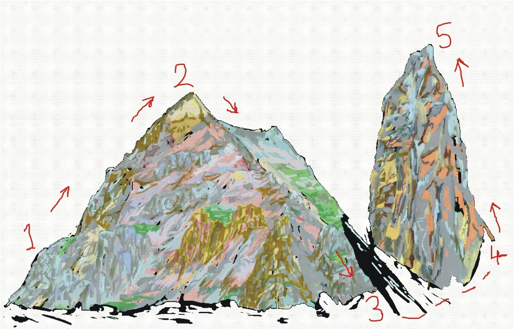
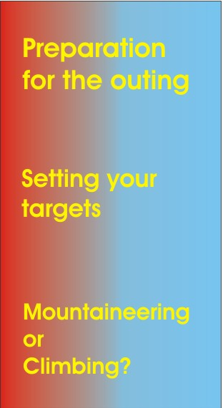
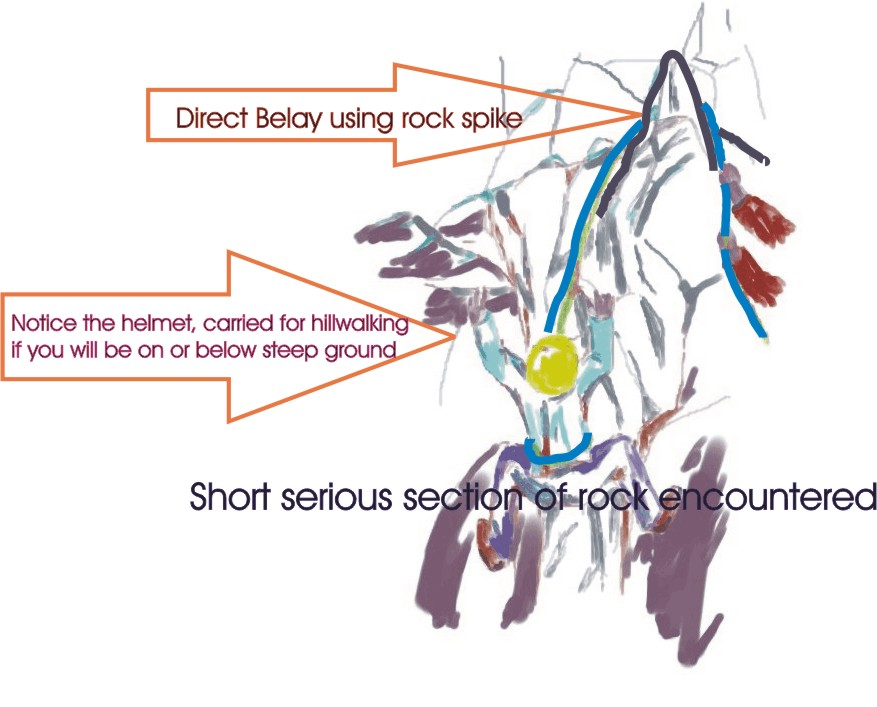
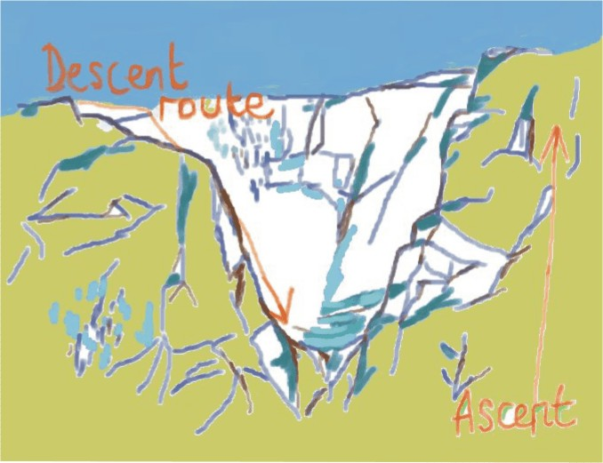
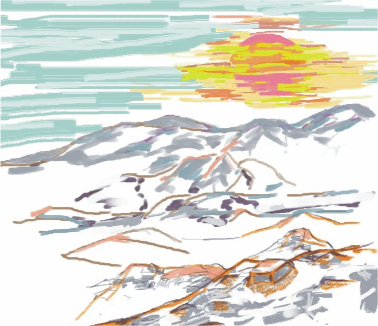

If you stay relatively fit, learn and gain enough experience there is no reason you should not always be at 3 on this chart. Any walk or climb needs respect so do not expect to not need to reprepare with some practice to get into shape. It is natural when walking however to feel how you are. Strong or confident you can adjust from the outset if you are a bit unfamiliar, bothered or just plain tired. So let’s get 2-3
CLIMBING ABILITY - A points approach (1-5) to analyse what your needs are.
- 1 fit and willing
- Point 2 to 3 Roadside multipitch. Can get down.
- 3 plus Equipment confidence
- 4 to 5 Look what's over there!
Considerations Specialist Equipment, Team, Climbing frequently (or training carefully), Guidebook, Weather, walking some (maybe better lot's), commitment, One way up or down with ropes
Walking/Climbing point checklist. see sections to side

WALKING PREPAREDNESS- A simple scale (1-3). How ready you are for the hills?
- Point 1 fit and willing
- Point 2 Got suitable outdoor clothing and group experience of the same challenge
- Point 2 to 3 Can read a map and use a compass. Can get home
- 3 plus Confident with emergency and wet weather equipment and walking rope and all supplies in rucksack.
Considerations Fitness, Map and Compass, Ropework, Guidebook, Routeplan, Weather planning and preparation, Walking frequently, Climbing some, Relaxed, Turn around at any time for any reason
My Skills
-Map skills, rope and equipment practice. Steep and dangerous ground, exposure and route finding experience. (Not necessarily exposure confidence in all places however!)
I cannot currently promise climbing leadership as pictured at 4-5 on my scale. I have plenty of personal experience there myself however and am hoping to get there as a leader or professional.

Your Skills ?
What is it you want to do and how far from it are you. Improve, train and assess for a new challenge. There are many ways to become competent and set off confidently. I think outdoor experience stays with you so the main thing is to keep the rucksack packed well. It contains your progress. I can help with practice, improvement of technical knowledge and experience on difficult ground.
I can teach how to use a rope to be to move safely and confidently on steep ground and how this has led to serious climbing. If you want to get into the hills as a partner or for increased confidence on your own then I can enhance navigation and ropewwork skills with planned routes and exploration.
| What do you want to do | Ropework skills | Extra Knowledge |
|---|---|---|
| Hillwalking | useful but optional | Walking rope knots, abseil |
| Scrambling | advised | Abseil practice, anchor knots practice, climbing |
| Trekking | route dependant | Abseil and walking rope and anchor knots practice |

Direct Belay- Using a walking rope to make safe a difficult step on steep ground. Recommended rope is 9mm and 15m length. Also recommended to be a climbing rope which is a dynamic shock absorbing rope making it more diversely useful like here on the right. The rope behind a rock feature can be easily used to hold the weight of your walking partner while they move up. 9mm is wide enough to grip and the minimum I have carried for this. More narrow rope is more difficult to hold and handle confidently though someone has bragged to me that they use 6mm for holding long falls (that is from above you rather than here where tension can always be applied to a reasonable spike belay and friction is present as a brake to hold a slip in the form of the rock rather than your hands )

Difficult terrain so important route choices. This is only seen on a map or in a guidebook until you get here. Consider how you can find alternatives if it is not as expected or it is raining now so much more dangerous. There are many reasons a mountain can look scary that are largely psychological but are not false warnings. There are good days and bad days for your performance as a mountaineer. Some people can alter on the spot but others need to build up confidence.
| what do you want to do | Map and Compass | Essential | Extra Knowledge |
|---|---|---|---|
| Hillwalking | required | Preparation test walks with map and compass, Distance and speed testing and pacing 100m. Confident planning of alternative and escape (safe easier)routes | Night navigation practice |
| Scrambling | required (note) | Map reading especially features and contours. Confident with compass bearing off to check current position. Escape routes. | Guidebook |
| Trekking | required | Routeplanning. Escape routes. Finding location by map and compass. | Local tourist guidebooks |
| note If you are scrambling down a drainpipe from your pals house I appreciate you will not need a map | |||

Lovely sunset. This also means you need to know how to get down in the dark
These are necessary navigation tools.
For navigating which is essential in wild walking the more definite you make it the more you can be confident and not lost. You will want to practice Map and Compass skills with tests of accuracy. Also it is important to set up how many paces you need for 100m in easy and tough terrain. Also use your watch to turn your pace and time into distance covered. The difference between 3 and 5 minutes is nearly 66% extra if you think about it. You would have gone right past your expected stand out feature and maybe also in the wrong direction if expecting to see it as a check. It might be easy to walk 400m in 5 minutes but seem like 200m and 3 minutes just because of many things. Overall your appreciation of the general direction might be pleasant, but to learn how to do precision is very important for ruling out serious mistakes. If suddenly you are anxious and in clouds you have to know how to pace 50metres, to be sure of your direction to establish where you are. However slowly you do this it is very comforting to know you are not lost at least from where you stopped at worst. I was taught that we don’t have a sense of direction and have spent a long time trying to make this untrue but there are times I think it will always be more true that you have gone wrong trusting one sense that was imagination more than accuracy. North or south can be known by the sun or stars but it is maps that really communicate and make the reason most of my wild walking has happened. Even without being especially good at it if they are very accurate it is a guarantee of help. Add a compass you should not be lost while on a map while in daylight. If you pay reasonable attention then you can find out where you are in cloud, on slopes and at night
Trekking, overnights and longer distance walks.
You might plan the whole route but have intentionally have made it unlikely to return for sunset. The longer the route the more time before you reach unknown places that might be different to expected. The conditions might have changed or the weather. To consider timing becomes more insistent. Different route choices at several stages become obvious.The reason for longer or harder days is a challenge but also because it is possible and can be done with time and preparation. It is what hillwalking requires in essence. Once you have the confidence the landscape is open to explore. The right to access and the freedom I feel are inescapably part of the experience. It is usually time away from work but there are paths and it is on a map, I am not wild hunting animals or expecting to live off the land. It was always a long way off really to conquer at least some of the peaks you will be wanting to explore.
If you go longer distances you will have good memories anyway. Often of the worst days were a challenge to be met instead of turning back where you temporarily find shelter or remember how nature is much bigger than just before. The preparation should not lead to the finish too quickly or it was not really required. Also each time you make a good choice in the passion of exploration then another wide set of improving choices open up from that place. I am reminded frequently that when I go somewhere that I feel is new how much there is to enjoy in the countryside that is unexpected. It is majestic beyond even the right to stay there. Walking and climbing is a good way to be a visitor. It is good leisure and more time is more immersion so go further.